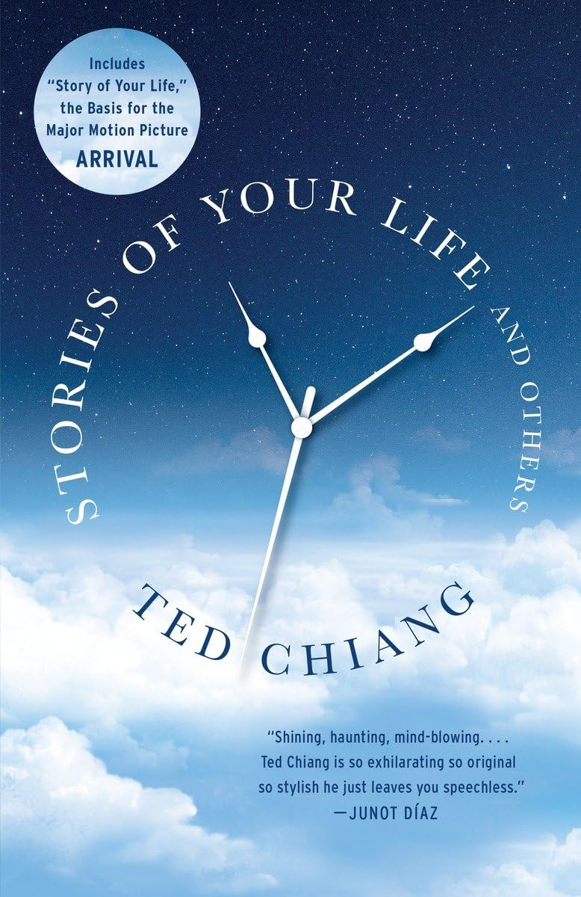

The story:
After staring at Amazon pages, Wikipedia summaries, and book reviews, for honestly an hour, I decided this would be a great way to use AI to consolidate all of the content and info about these books together. I wanted to pick out a short story for my friend’s birthday, so I just scanned through the options by having them compiled by GPT 4o. As such, our conversation was as follows:
First Prompt:
Hi! I’m buying a gift for a friend and I’m thinking about a book or collection of short stories. I really like those by Kafka and Poe. What are some ideas?
First Response:
That’s a great starting point—both Kafka and Poe have that dark, introspective, and sometimes surreal edge. Here are some suggestions depending on which aspect you want to lean into:
If You Want to Stay Close to Kafka’s Existential and Absurdist Themes:
- Albert Camus – Exile and the Kingdom: A lesser-known collection of short stories exploring isolation and absurdity.
- Bruno Schulz – The Street of Crocodiles: Rich, dreamlike prose that feels very Kafkaesque in its depiction of strange, decaying towns.
- Franz Kafka – The Complete Stories (if they don’t already own this—it’s a must-have).
If You’re Leaning Toward Poe’s Gothic and Macabre:
- H.P. Lovecraft – The Call of Cthulhu and Other Weird Stories: Classic cosmic horror and existential dread.
- Shirley Jackson – Dark Tales: Quietly terrifying stories, very psychological and unsettling.
- Angela Carter – The Bloody Chamber: Gothic fairy tales retold with dark, feminist twists.
If You Want Something a Bit More Contemporary But In the Same Spirit:
- George Saunders – Tenth of December: Surreal and darkly humorous stories that explore human frailty.
- Ottessa Moshfegh – Homesick for Another World: Bleak, strange, and oddly funny explorations of alienation.
- Ted Chiang – Stories of Your Life and Others: Thoughtful, speculative fiction with philosophical weight (including the story that inspired Arrival).
Do you know if your friend prefers more classic works or something modern?
Follow up question:
What about more classic works, potentially more positive!
Second Response:
If you’re looking for something classic and more positive—perhaps still profound but with a sense of wonder or hope—here are some excellent choices:
Classic, Uplifting, or Wonder-Filled Short Story Collections:
- Anton Chekhov – Selected Stories: While some are melancholic, many explore everyday moments with warmth, humor, and deep humanity.
- Rudyard Kipling – The Jungle Book: Beyond the Disney version, these are beautifully written coming-of-age stories filled with adventure and moral lessons.
- Oscar Wilde – The Happy Prince and Other Tales: Gorgeous, heartfelt fairy tales for adults and children alike, often bittersweet but filled with beauty and kindness.
- Leo Tolstoy – Twenty-Three Tales: Short stories with strong moral undercurrents and a focus on compassion and the good life.
If They Appreciate Philosophy and Optimism:
- Marcus Aurelius – Meditations (not a story collection, but timeless, uplifting philosophical reflections).
- Kahlil Gibran – The Prophet: Lyrical essays that read almost like parables, offering gentle life wisdom and hope.
Would you like me to narrow this down to one or two that feel the most timeless and gift-worthy?
Another question:
What about more novel style books that still have this essense?
Last response:
If you’re leaning toward full novels that carry a positive, life-affirming spirit while still offering deep reflection (and maybe a touch of the surreal or philosophical), here are some classics that strike that balance:
Life-Affirming Classics with Depth:
- Hermann Hesse – Siddhartha: A beautifully simple novel about spiritual self-discovery and the search for enlightenment.
- Antoine de Saint-Exupéry – The Little Prince: Technically a children’s book, but universally beloved for its profound reflections on love, loss, and the meaning of life.
- Italo Calvino – Invisible Cities: Dreamlike and philosophical, exploring imagined cities through conversations between Marco Polo and Kublai Khan. A celebration of imagination and perception.
- Laurie Lee – As I Walked Out One Midsummer Morning: A lyrical memoir that reads like a novel, chronicling Lee’s walking journey through Spain with youthful optimism and wonder.
Gentle and Beautifully Human:
- Elizabeth Gaskell – Cranford: Quiet humor and kindness dominate this portrait of small-town life, full of endearing characters and warmth.
- E.M. Forster – A Room with a View: A lighthearted critique of Edwardian society with a hopeful message about love and personal freedom.
- Marcel Pagnol – My Father’s Glory & My Mother’s Castle: Joyful, sun-drenched memoir-novels about childhood in Provence, filled with nostalgia and affection.
Would you prefer one with more of a spiritual journey (like Siddhartha) or a celebration of everyday life (like Cranford)?
Reflection:
This was honestly super helpful! I think this encapsulates how LLMs can be super helpful in every day life, when you’re looking for a shortcut to make something happen faster. This probably shvaed hours off of the time I spent thinking about this gift, and I thought it worked well. In the end, I picked Ted Chiang – Stories of Your Life and Others, which I myself really enjoyed reading a few years ago. If you have time, I think this would be a great read for anyone! Especially if you like science fiction and philosophy.
